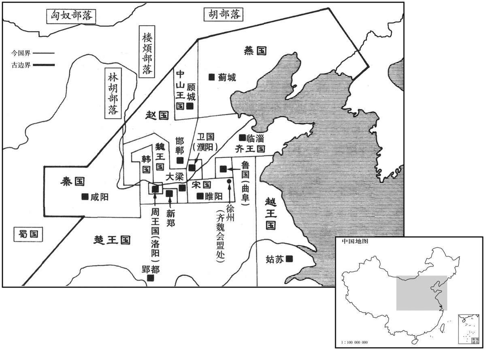
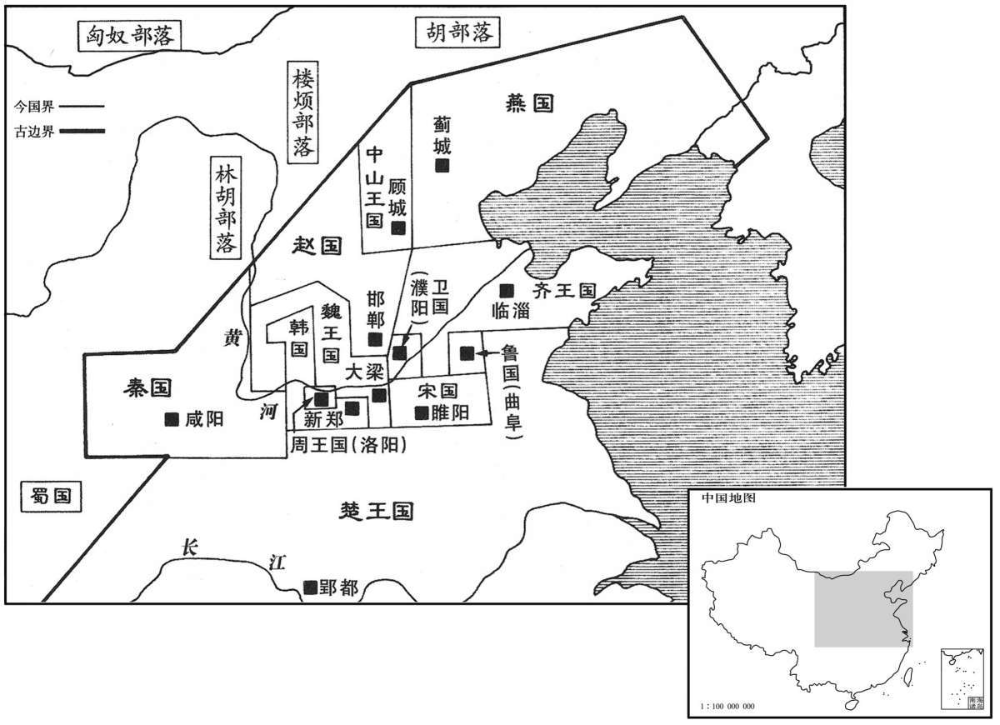

公元前334年资治通鉴：本年记事、原文与白话对照
按原书编年位置阅读；追叙和史论不等于本年发生的事件。白话采用所据译本，缺译不以生成译文补齐。
卷2 · 本年记事
公元前334年 · 显王在位第35年
三十五年〔（丁亥、前三三四）〕
本年事件索引（现代整理）

本年形势与背景参考图

本年形势与背景参考图
齐王、魏王会于徐州以相王。〔史记正义曰：竹书纪年云：梁惠王三十年，下邳迁于薛，改曰徐州。续汉志曰：鲁国薛县，六国时曰徐州。与竹书合。徐，音舒。相王者，相立为王也。〕
齐王、魏王在徐州会面，互相尊称为王。
韩昭侯作高门，屈宜臼曰：“君必不出此门。〔许慎曰：屈宜臼，楚大夫，时在韩。屈，九勿翻。〕何也？不时。吾所谓时者，非时日也。夫人固有利、不利时。〔夫，音扶。〕往者君尝利矣，不作高门。前年秦拔宜阳，今年旱，君不以此时恤民之急而顾益奢，此所谓时诎举赢者也。〔诎，区勿翻。徐广曰：时衰耗而作奢侈，言国家多难而势诎，此时宜恤民之急，而举事反若有赢余者，失其所以为国之道矣。“时诎举赢”，盖古语也。赢，怡成翻。〕故曰不时。”
韩昭侯修建一座高大的门楼，屈宜臼对他说：“您肯定走不出这座门的。为什么呢？因为时运不宜。我所说的时候，并不是指时间。人生在世有顺利、不顺利的时候。过去您曾经有好时运，却没有修建高门楼。而去年秦国夺去了我们的宜阳，今年国内又大旱，您不在这时抚恤百姓的危难，反而奢侈挥霍，这正是古话所说的越穷越摆架子。所以我说时运不宜。”
越王无强伐齐。〔越王句践之后。自句践至无强，凡六世。句，音钩。践，音慈浅翻。〕齐王使人说之以伐齐不如伐楚之利。〔说，式芮翻。〕越王遂伐楚。楚人大败之，〔败，补迈翻。〕乘胜尽取吴故地，东至于浙江。越以此散，诸公族争立，或为王，或为君，滨于海上，〔吴之故地，汉会稽、九江、丹杨、豫章、庐江、广陵、临淮等郡是也。越初都会稽，其境北至于御儿，不能全有汉会稽一郡地；及其灭吴，始并有吴地。今楚取吴地至于浙江；则御儿亦入于楚矣。浙江有三源：发于太末者谓之榖水，今之衢港是也；发于乌伤者，水经谓之吴宁溪，今之婺港是也；发于黝县者，班志谓之渐江水，今之徽港是也，三水合为浙江，东至钱唐入海。浙，折也，言水屈折于群山之间也。释名曰：江，共也，小水流入其中，所公共也。国于海上者，汉之瓯越、闽越、骆越其后也。浙，之列翻。滨，音宾。会，古外翻。太末之太，孟康音闼。港，古项翻。婺，亡遇翻。黝，音伊。闽，眉巾翻。骆，音洛。〕朝服于楚。〔朝，直遥翻。〕
越国国王姒无强攻打齐国。齐王派人向他游说：伐齐国不如去攻楚国好处大。越王于是去攻打楚国，却大败而归。楚国趁势占领了原先吴国的旧地，向东一直到浙江。越国从此分崩瓦解，各家贵族争相为王，或自立为国君，分散在沿海一带，各自向楚国臣服。